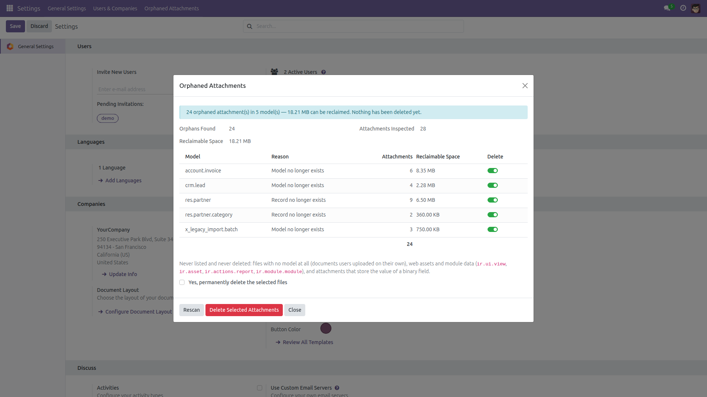
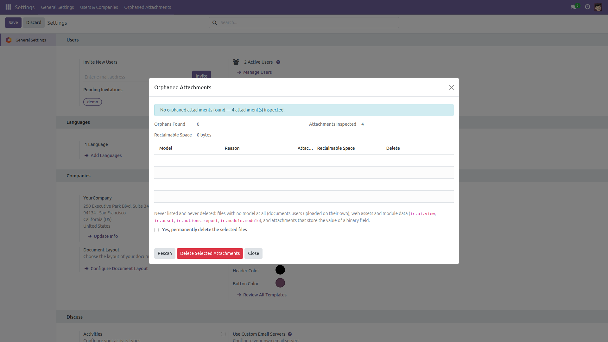

Find Orphaned Attachments
Reclaim the filestore space deleted records left behind.
Deleting a record does not always remove the files attached to it. After data imports, module uninstalls and failed jobs, attachments are left pointing at a record that is gone — or at a model that no longer exists in the database at all. Nothing ever cleans them up, and they keep consuming filestore space forever. This module scans for them, groups them by model, and shows exactly how much space they waste.
Free and open source (LGPL-3), Odoo 14.0 through 19.0.
- Report only — the scan never changes anything. Opening it is always safe.
- Two kinds of orphan — attachments whose model is no longer in the registry (an uninstalled module, a removed model) and attachments whose record was deleted.
- Reclaimable space — per model and in total, so you know what a cleanup is worth before running it.
- Deliberate cleanup — a confirmation box plus a confirmation dialog, reserved for Settings administrators, deleting exactly what was listed and nothing else.
- Pick and choose — untick any model group you would rather keep.
- Fast on large databases — one grouped query lists the models, one existence check per model finds the dead records. Attachments are never read one by one.
Screenshots

The scan groups orphaned attachments by model, states why each group is orphaned and how much space it would give back. Nothing is deleted until you say so.

After the cleanup — and on a healthy database — the scan simply reports that there is nothing to do, and how many attachments it inspected.
Installation
- Open Apps, search for Find Orphaned Attachments and click Install.
- Only the standard
base module is required — no dependency on any app.
Configuration
- Nothing to configure. The entry appears under Settings → Orphaned Attachments for users with Administration / Access Rights.
- The delete button and its confirmation box are shown only to Administration / Settings users; everybody else sees the report alone.
- Back up your filestore before the first cleanup, as you would before any bulk deletion.
Usage
- Go to Settings → Orphaned Attachments. The scan runs immediately and only reads.
- Read the lines: one per model, with the reason (Model no longer exists or Record no longer exists), the number of files and the reclaimable space.
- Untick Delete on any group you want to keep.
- Tick Yes, permanently delete the selected files, click Delete Selected Attachments and confirm the dialog.
- Click Rescan whenever you want fresh figures.
Safety — what is never touched
A wrong deletion here destroys data, so the scan is deliberately conservative. These attachments are never listed and never deleted:
- Files with no model at all — documents users uploaded on their own, which belong to nobody but them.
- Web assets and module data —
ir.ui.view, ir.asset, ir.actions.report and ir.module.module, which Odoo owns and regenerates by itself.
- Binary field storage — any attachment with
res_field set holds the value of a field on a live record; deleting it would blank that field.
- Uploads in progress — attachments not linked to a record yet.
- Archived or invisible records — existence is checked directly against the table, ignoring record rules and the active flag, so a record that is merely hidden from you is never mistaken for a deleted one.
The cleanup re-applies every one of these exclusions to the selected lines immediately before deleting, so nothing outside the reported set can be removed.
Version notes
Identical behavior on every supported series (14.0 – 19.0).
License: LGPL-3 · Source on GitHub · Issues and contributions welcome.